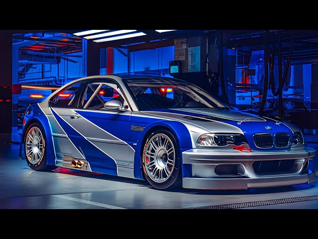
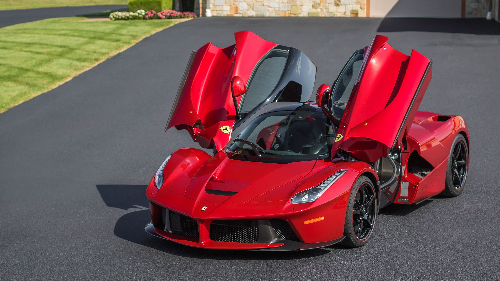
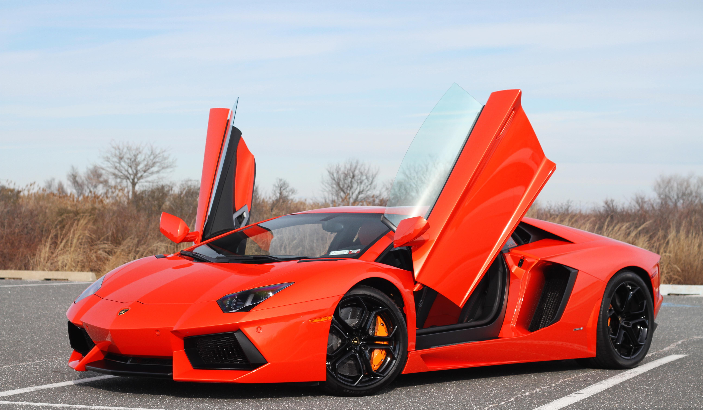
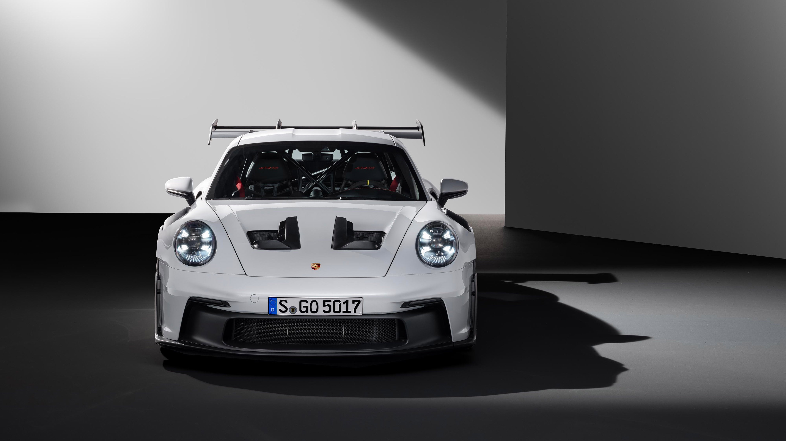

Capturing speed, style, and passion through the lens.
Photography is about freezing powerful moments in time. For me, that passion meets the world of supercars — machines that embody speed, engineering, and beauty. This site showcases my favorite car photographs, including the iconic BMW M3 GTR from Need for Speed: Most Wanted (2005), alongside other legendary models I’ve captured or admired.




Hi, I’m Lewis Muithya, a photographer and supercar enthusiast. My journey began with Need for Speed: Most Wanted and the legendary BMW M3 GTR, but it grew into a passion for capturing cars through photography. I love blending art and engineering by photographing the world’s fastest machines in unique settings, using light, angles, and motion to tell their story.